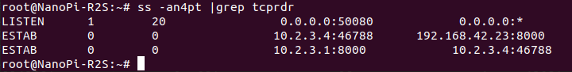

Transparent Proxy
这篇文章通过实验探究 transparent proxy 的实现.
定义
维基百科:
Transparent proxy, Also known as an intercepting proxy, inline proxy, or forced proxy
RFC 2616: Hypertext Transfer Protocol—HTTP/1.1:
"A 'transparent proxy' is a proxy that does not modify the request or response beyond what is required for proxy authentication and identification". "A 'non-transparent proxy' is a proxy that modifies the request or response in order to provide some added service to the user agent, such as group annotation services, media type transformation, protocol reduction, or anonymity filtering".
上面的定义有些反直觉, 因为我们通常认为透明是指人感知不到. 这里的透明是指不修改报文信息, 包的一切信息对本机软件来说都是透明的. Linux 提供了包信息的接口和方法论.
REDIRECT, DNAT : Non-Transparent Proxy
又称为端口转发.
DNAT 用于 Remote Port Forwarding
iptables -A PREROUTING -t nat -i eth1 -d 172.11.22.1/32 -j DNAT --to-destination 192.168.42.23:8000
REDIRECT 用于 Local Port Forwarding
iptables -A PREROUTING -t nat -i eth1 -d 172.11.22.0/24 -p tcp --dport 80 -j REDIRECT --to-port 8000
REDIRECT 是 DNAT 的特殊形式, 不需要指定地址.
上面例子中, 我使用了一个不存在的 172.11.22.1 网段, 但给它配置了路由, 当目标实际上不存在的包到达网关的时候, 网关修改可它的 IP Header, DNAT 改成 192.168.42.23, REDIRECT 改成 127.0.0.1
在 PREROUTING 链表上改的原因是, 改完首部信息之后, 还可以被路由到目的地, 且 nat table 只存在于 PREROUTING, FORWARD, POSTROUTING 这三个表中, 放在其他 table 中无效.
下面是 REDIRECT 的例子, 主机访问不存在的主机, 网关将其流量导向本地的 HTTP 服务, 回来的包的地址是 172.11.22.33, 访问者根本不知道服务器是什么. 这种操作可应用于反向代理.

Original Destination 的问题
Remote Port Forwarding 中的远端服务不在乎包原来的目标地址, 它只需要把包发回即可, 知道与之对应的客户端是谁.
Local Port Forwarding 中, REDIRECT 在内核里面修改了包的目标地址, 导致用户态应用收到包之后, 不知道包原来的目的是什么.
为什么要需要一个用户态应用? 因为可能需要可能需要经过更高层协议的过滤或处理, 比如加密包的负载, 或者多套一个 IP Header.
REDIRECT 需要在路由之前修改包的目标地址, 才能让包经历路由系统, 路由系统判断包地址 127.0.0.1, 将包发给 local 应用.
解决方法: 在调 getsockopt() 时加上一个 SO_ORIGINAL_DST 选项, 但这个选项没有任何正式的文档记录, 这封内核开发者邮件可能比较权威:
int nf_getsockname(int fd, struct sockaddr *sa, int *salen)
{
if (*salen != sizeof(struct sockaddr_in)) {
errno = EINVAL;
return -1;
}
if (0 == getsockopt(fd, SOL_IP, SO_ORIGINAL_DST, sa, salen)) {
return 0;
}
return getsockname(fd, sa, salen);
}
为什么还能拿到 original destination? 因为 netfilter 有一个连接跟踪模块 conntrack , 记录连接的所有信息.你可以安装它的用户态应用 apt install conntrack.
上图中我 wget 一个不存在的地址, 连接跟踪信息显示了包在内核中的涉及的所有地址.
回去的包的源地址会被地址转换
UDP 同理:
问题在于 SO_ORIGINAL_DST 不适用于UDP, 有两个原因
- 实际上: 内核不支持
-
理论上: UDP 不像 TCP
accept()一次就返回一条只属于 2 个 socket 的连接, UDP 每一次recvfrom(sockfd, ...)时的对端都可能不一样. 就算内核允许你获取原来的目标地址, 你在recvfrom之后马上去读sockfd的 ORIGINAL DESTINATION, 就在recvfrom到getsockopt()之间, 一个新的报文过来, 系统收到硬中断, 将内容写入sockfd对应的缓存中, 改变了sockfd的状态, 等服务端重新获得控制, 去getsockopt()的时候, 提取的就是新包的 ORIGINAL DESTINATION. 这里面存在 race condition. 可以参考这篇文章的说法.TPROXY 的作者是这么论证[1]的: 你可以收到一个包就马上创建一个 UDP socket, 马上绑定 这样你就可以避免其他包的干扰(实际上 socket 不能绑定已经被占用的地址, 作者的意思是假设内核允许). 但如果紧接着还有多个同一源地址的包, 内核会第一时间将包发给原来的
sockfd而不是你刚创建的 socket, 这样一来, 你就要重复创建大量的 socket;也可能在调用getsockopt的时候 contrack 超时了.而且这很麻烦, 花销也很大.
由于无法获取 UDP 的原目标地址, 所以 UDP 代理不能使用 REDIRECT.
不依赖 NAT 的透明代理
The ‘TPROXY’ target provides similar functionality without relying on NAT.[2]
以下三个例子取自这篇文章 Iptables REDIRECT vs. DNAT vs. TPROXY, 讲述了如何不依赖 NAT 的实现透明代理.
我补充了完整的命令行操作. 作者使用了 nf_tables 作者的调试工具: https://git.breakpoint.cc/cgit/fw/tcprdr.git/, 同时这也是用户态应用的一个示例, 编译后可用.
网络拓扑:
+-----+ .3 .23 +-----+
(proxy) | R2S |------------------- | WIN | (server)
+-----+ 192.168.4.0/24 +-----+
| .1
|
| 10.2.3.0/24
|
| .4
+-----+
| LNX | (client)
+-----+
不依赖内核支持的纯用户态透明代理
[R2S]$ tcprdr 50080 192.168.42.23 8000
binding address 0.0.0.0
Handling connection from 10.2.3.4 to 192.168.42.23
[WIN]$ ncat.exe -l 0.0.0.0 8000
[LNX]$ telnet 10.2.3.1 50080
Trying 10.2.3.1...
Connected to 10.2.3.1.
Escape character is '^]'.
[R2S]$ ss -an4pt |grep tcprdr
LISTEN 0 20 0.0.0.0:50080 0.0.0.0:* users:(("tcprdr",pid=18486,fd=3))
ESTAB 0 0 10.2.3.1:50080 10.2.3.4:38140 users:(("tcprdr",pid=18486,fd=4))
ESTAB 0 0 192.168.42.3:34214 192.168.42.23:8000 users:(("tcprdr",pid=18486,fd=5))
注意到 tcprdr 不使用 -T(即不设置 IP_TRANSPARENT socket 选项) 或 -t(TPROXY 模块).
IP_TRANSPARENT 用来绑定非本机地址, TPROXY 扩展的作用和 socket 扩展类似, 后面会解释.
结果显示, tcprdr 分别建立了两条分别在不同网段的连接, 逻辑是这样的: R2S 收到 LNX 的包之后, 在本地创建一个 socket, 连接到 WIN, 你可以用 strace 查看 tcprdr 的系统调用.这个过程不依赖 netfilter.
使用策略路由将包发给本地应用
在 R2S 下发以下命令, 理由在后面会解释.
iptables -t mangle -N DIVERT
iptables -t mangle -A PREROUTING -s 10.2.3.4,192.168.42.23 -d 10.2.3.4,192.168.42.23 -p tcp -m socket -j DIVERT
iptables -t mangle -A DIVERT -j MARK --set-mark 1
iptables -t mangle -A DIVERT -j LOG --log-prefix='[tproxy-test]'
iptables -t mangle -A DIVERT -j ACCEPT
ip rule add fwmark 1 lookup 100
ip route add local 0.0.0.0/0 dev lo table 100
在 Windows 上加一条路由, 服务端才知道往哪回包.
tcprdr 加上一个选项 -T 表示收到 LNX 的包之后创建的 socket 将带 IP_TRANSPARENT 属性, 使得 R2S 可以绑定非本地的地址 10.2.3.4 , 这个地址原本属于 LNX
[WIN]$ route add 10.2.3.0/24 mask 255.255.255.0 192.168.42.3
操作完成!
[R2S]$ tcprdr -T 50080 192.168.42.23 8000
binding address 0.0.0.0
binding address 10.2.3.4
Handling connection from 10.2.3.4 to 192.168.42.23
[LNX]$ nc 10.2.3.1 50080
[R2S]$ ss -an4pt |grep tcprdr
LISTEN 0 20 0.0.0.0:50080 0.0.0.0:* users:(("tcprdr",pid=18945,fd=3))
ESTAB 0 0 10.2.3.1:50080 10.2.3.4:57966 users:(("tcprdr",pid=18945,fd=4))
ESTAB 0 0 10.2.3.4:57966 192.168.42.23:8000 users:(("tcprdr",pid=18945,fd=5))
从 ss 结果可以看出, 192.168.42.23 的对端是 10.2.3.4
Iptables 的 socket 扩展[3]
使用这个匹配条件的时候(-m socket), 系统将检查所有 socket, 看是否由有与包的目标地址和端口一样的 socket, 如果有, 则匹配. 这个例子中, 10.2.3.4:36144 确实是 R2S 某个 socket 的地址.
从上图可以看出 192.168.42.23 -> 10.2.3.4被 -m socket 捕获了. 同时, 作为对比, 在 LNX 开启一个 8000 端口的服务, 在 WIN 上 wget 10.2.3.4:8000 会看到包被转发, 继而到达 LNX. 并且 dmesg 上没有任何打印, 表明了流量没有通过 -m socket 规则.
PS C:\Users\User> wget 10.2.3.4:8000
StatusCode : 200
StatusDescription : OK
理由很简单, 10.2.3.4:8000 不匹配 R2S 上的任何 socket.
策略路由的作用
现在来解释上面的 iptables 操作, 首先删掉策略路由
ip route del local 0.0.0.0/0 dev lo table 100
ip rule del fwmark 1 lookup 100
LNX 发包, WIN 收不到. R2S 的 ss 结果:
SYN-SENT 0 1 10.2.3.4:37158 192.168.42.23:8000 users:(("tcprdr",pid=19749,fd=5))
10.2.3.4(R2S) 发出包 SYN, 但无法建立连接. 在 R2S 用 tcpdump 查看通信情况.
[R2S]:~# tcpdump host 192.168.42.23 or host 10.2.3.4 or host 10.2.3.1 and tcp -nv
10.2.3.4.36144 > 192.168.42.23.8000: Flags [S]
192.168.42.23.8000 > 10.2.3.4.36144: Flags [S.]
192.168.42.23.8000 > 10.2.3.4.36144: Flags [S.]
10.2.3.4.36144 > 192.168.42.23.8000: Flags [S]
192.168.42.23.8000 > 10.2.3.4.36144: Flags [S.]
10.2.3.4.36144 > 192.168.42.23.8000: Flags [S]
192.168.42.23.8000 > 10.2.3.4.36144: Flags [S.]
10.2.3.4.36144 > 192.168.42.23.8000: Flags [S]
10.2.3.4 根本没回 192.168.42.23 的 SYN+ACK . 我曾怀疑 [S.] 是否发到真实的 10.2.3.4 去了, 但通过抓包发现 LNX 没收到任何 192.168.42.23 的包. 用 ip route get 查询, 包确实应该发到 eth1, 对端是 LNX. 可能是因为 -m socket 识别到包属于本机, 所以往外转发的时候出错. 这个问题需要更强的追踪技术, 不在本文讨论范围.
把路由加回去.
ip rule add fwmark 1 lookup 100
ip route add local 0.0.0.0/0 dev lo table 100
这条策略的意思是, 对于带有 0x1 标记的包, 在 table 100 找路由规则, table 100 只有一条规则, 那就是所有流量都通过 loopback 设备发出.
也可以打印出内核的路由信息, 但没什么用
以上说明 192.168.42.23 -> 10.2.3.4 被 loopback 设备发出之后, 包的首部信息不变. 如果没有 mark, 则从 eth1 发出, 到达真实的 10.2.3.4 (LNX), 这一点和实际相符.
TPROXY: 替代 iptables socket 扩展
清空 Iptables 规则, 保留策略路由
# R2S
iptables -t mangle -F DIVERT
iptables -t mangle -X DIVERT
加上新的规则
# R2S
iptables -t mangle -A PREROUTING -p tcp --dport 8000 -j TPROXY --tproxy-mark 0x1/0x1 --on-port 50080
iptables -t mangle -A PREROUTING -s 192.168.42.23 -p tcp --sport 8000 -j TPROXY --tproxy-mark 0x1/0x1 --on-port 50080
分别表示:
- 目标端口是 8000 的包被打上标记 0x01 并发往 50080 端口
- 源地址为 192.168.42.23:8000 的包被打上标记 0x01 并发往 50080 端口
[WIN]$ nc -l 0.0.0.0 8000
[R2S]$ tcprdr -t -T 50080 192.168.42.23 8000
[LNX]$ nc 10.2.3.1 8000
R2S(10.2.3.1) 并未监听 8000 端口, 它监听的是 50080 端口, 但可以将 10.2.3.1:8000 的请求转发出去.

给监听 socket 加上 IP_TRANSPARENT 选项, 那么 accept() 返回的 socket 端口和请求报文的目标端口的一样. 返回 LNX 的包并没有暴露真实的服务器地址.
实际应用
上一节重现了 Iptables REDIRECT vs. DNAT vs. TPROXY 的最后一个例子, 其中我们用 nc 10.2.3.1 8000, 依然指定了地址.
现在测试直接连接服务器, 看流量是否被定向到 tcprdr.
[WIN]$ nc -l 0.0.0.0 8000
[R2S]$ strace tcprdr -t -T 50080 192.168.42.23 8000
[LNX]$ nc 192.168.3.1 8000
用 strace 观察 tcprdr 的动态.
可以看到服务端可以收到 LNX 发出的信息, tcprdr 有反应, LNX 与 R2S 在用户不知情的情况下建立了连接, 同时 LNX 收到的回复源地址正是服务端的地址.
实际应用中, 代理直接读取目标端口, 不需要指定, 这里指定是因为 tcprdr 是一个测试工具.
总结
DNAT 在修改目标地址的同时, 也丢失了原来的目标地址, 影响上层应用的开发, TPROXY 相当于减少内核的干预, 给上层应用更多决定权. 以上例子展示了透明的行为模式, 具体实现可参考 tcprdr.
参考
- https://gsoc-blog.ecklm.com/iptables-redirect-vs.-dnat-vs.-tproxy/
- https://www.kernel.org/doc/html/latest/networking/tproxy.html
- https://linux.die.net/man/8/iptables
- https://ipset.netfilter.org/iptables-extensions.man.html
- http://linux-ip.net/html/index.html
- https://stackoverflow.com/a/5814636
- https://news.ycombinator.com/item?id=16821807
- http://blog.zorinaq.com/65k-open-tcp-ports-on-openzorinaqcom/
- http://lkml.iu.edu/hypermail/linux/kernel/9910.0/0221.html
- http://lkml.iu.edu/hypermail/linux/kernel/9910.0/0251.html
- https://powerdns.org/tproxydoc/tproxy.md.html
- https://github.com/moxie0/sslsniff/blob/master/util/Destination.cpp
- https://stackoverflow.com/questions/49798234/how-to-redirect-tcp-packages-to-a-proxy-without-losing-the-original-destination/49800079#49800079
- https://www.systutorials.com/port-forwarding-using-iptables/#:~:text=Linux port forwarding is simple,packet filter rules in iptables.
- https://www.kernel.org/doc/Documentation/networking/tproxy.txt
As an example implementation, tcprdr is available here: https://git.breakpoint.cc/cgit/fw/tcprdr.git/ This tool is written by Florian Westphal and it was used for testing during the nf_tables implementation.